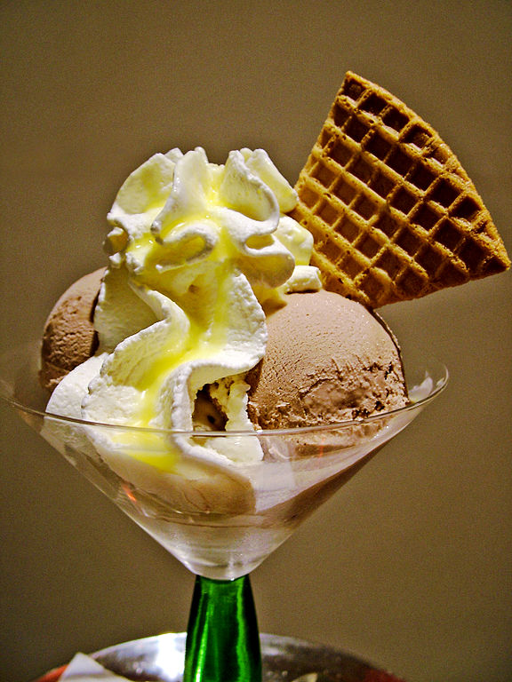

Recipes

Blooming Ice-cream
Ice cream contains some important nutrients, like calcium, vitamin D and vitamin A, among others. But while these nutrients are all needed for good health,
the amount in ice cream is small and is accompanied by a hefty dose of fat and added sugar.
Ice cream stimulates the thrombotonin, which is a hormone of happiness and helps in reducing the levels of stress in the body. Ice cream is made of milk, which contains L-triptophane, which is a natural tranquilizer and helps in relaxing the nervous system.
It also helps prevent symptoms of insomnia
Ingredients
- 1 litre milk
- 1/2 tablespoon corn flour
- 1 cup fresh cream
- 1 cup sugar
- 2 teaspoon vanilla essence
Steps
- Step 1: Boil the milk and keep stirring
- To make Vanilla Ice cream at home, take a small bowl and add 1 teaspooncornflour in 4 tablespoon
milk, stir it into a smooth paste. Ensure that you use cold milk or lumps will be
formed. Mix well and keep the mixture aside. In the meantime, take a vessel and boil the milk,
keep stirring so that the milk does not stick to the bottom.
- Step 2 : Add sugar to the blend
- Reduce the milk to half. This will ensure that your ice cream turns out to be creamy.
Now add in the cornflour and milk mixture. stirring occasionally.
Now, add the sugar and allow the milk to reduce. Once the consistency of milk thickens,
reduce the flame to low.
- Step 3 : Add fresh cream and vanilla essence
- Next, add the fresh cream and vanilla essence and mix well. After mixing, turn off the flame
and pour the mixture into an aluminium container.
Cover the container with an aluminium foil and freeze for 6 hours or till semi-set.
- Step 4 : Freeze & serve your Homemade Vanilla Ice Cream!
- Remove from the freezer and pour the mixture into a blender and blend till smooth.
Transfer the mixture back into the same aluminium container.
Cover with an aluminium foil and freeze for 10 hours or till set.
Your Homemade Vanilla Ice Cream is ready! Scoop the vanilla ice cream in some crispy waffle cones
and enjoy the flavourful dessert.
Back to Home page